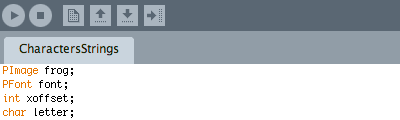
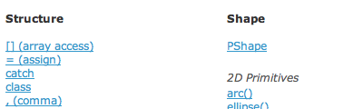
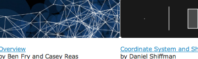
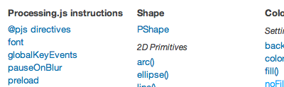
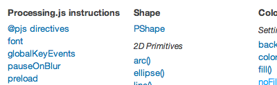
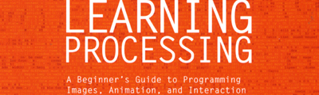
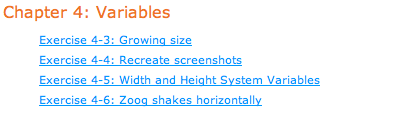

The intersection of art & technology.
The blur between the digital & real.
Here's a complete guide for using Processing & Arduino.
Processing.org
  {kind=link}
{kind=link}
{kind=link}
Platform: Processing
Difficulty: Beginner
View page: Processing.org
Description: Processing is an open source programming language for generating finished professional work and digital art. Today, there are tens of thousands of students, artists, designers, researchers, and hobbyists who use Processing for learning, prototyping, and production.
Processing.js
 

{kind=link}

Platform: Processing
Difficulty: Intermediate
View page: Processingjs.org
Description: Processing.js is the sister project of the popular Processing visual programming language, designed for the web. Processing.js makes your data visualizations, digital art, interactive animations, educational graphs, video games, etc. work using web standards and without any plug-ins.
Learningprocessing.org
 {kind=link}
{kind=link}
{kind=link}
Platform: Processing
Difficulty: Beginner
View page: Learningprocessing.org
Description: This unique lab-style manual gives graphic and web designers, artists, and illustrators of all stripes a jumpstart on working with the Processing programming environment by providing instruction on the basic principles of the language, followed by careful explanations of select advanced techniques.